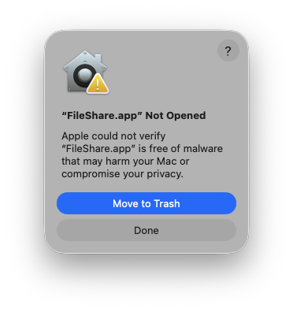

FileShare
Copie no Mac,
cole no tablet.
Copy on your Mac,
paste on your tablet.
E o contrário. Texto, imagens e arquivos entre o seu Mac e o seu Android, pelo seu Wi-Fi, criptografados. Sem conta e sem nuvem.
And back. Text, images and files between your Mac and your Android, over your Wi-Fi, encrypted. No account, no cloud.
Grátis e de código aberto · macOS 14+ · Android 13+Free and open source · macOS 14+ · Android 13+

Primeira vez no Mac? O macOS vai dizer que não conseguiu verificar o FileShare. É normal para apps gratuitos fora da App Store. Clique no botão de baixo (Done), não no azul (Move to Trash) e depois em Ajustes do Sistema → Privacidade e Segurança → Abrir mesmo assim. Ver o passo a passo
First time on the Mac? macOS will say it couldn't verify FileShare. That's normal for free apps outside the App Store. Click Done (the bottom button, not Move to Trash), then System Settings → Privacy & Security → Open Anyway. See it step by step